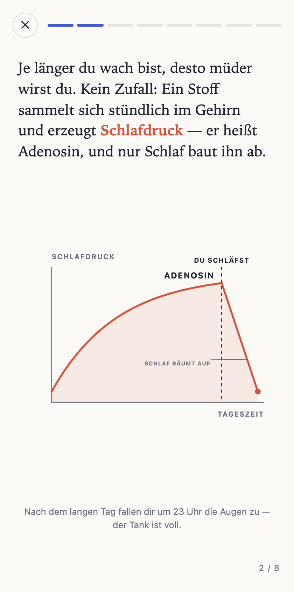
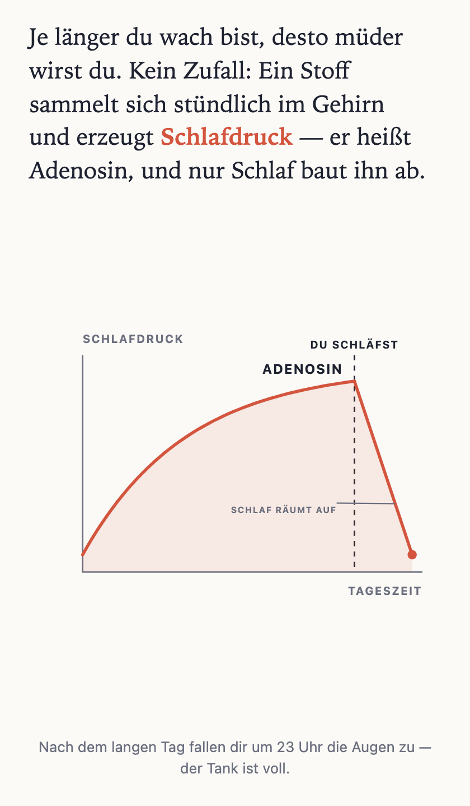

Einstieg. Oben die eine Frage „was jetzt tun“ – fällige Karten mit direktem Üben-Button. Darunter Lektionen mit eigenem Farb-Motiv; laufende Generierung erscheint als normale Zeile mit Status. Unten der ständige Weg zu neuem Stoff.
Kamera zuerst – Buchseite, Folie oder Objekt. Texterkennung läuft auf dem Gerät (VisionKit). Segment wechselt zur Thema-Eingabe für alles ohne Foto. Auslöser → S3.
Der eine Tap, der Qualität sichert: erkannte Quelle + Auszug prüfen, Tiefe wählen, dann erst Minuten Generierung. Fehlerkennung hat hier ihren Ausgang („Ändern“), nicht nach dem Bau.
Ehrlicher Status der echten Pipeline-Stufen. Kein Warten-Zwang: „Zur Bibliothek“ lässt die App weiterbenutzen, Mitteilung kommt bei Fertigstellung. Wording = Funktions-Logik, kein Marketing.
Dauert ein paar Minuten. Du bekommst eine Mitteilung, sobald sie fertig ist.
Ab hier kein Nachbau: Der Screen unter der Statusbar ist ein unretuschierter Shot des ECHTEN Renderers (karten-grammatik.html, Lektion Schlaf, Karte 2) — exakt das, was der WKWebView in der App zeigt. Eine Geometrie-Quelle für App und Audits.

Fällige Karten quer über alle Lektionen — die Karte selbst ist echter Renderer-Output, nur kleiner gerahmt. Selbst einschätzen: vier Stufen mit ehrlichem nächsten Abstand (SM-2). Jede Antwort wird als Ereignis gespeichert, der Lernstand daraus berechnet.
